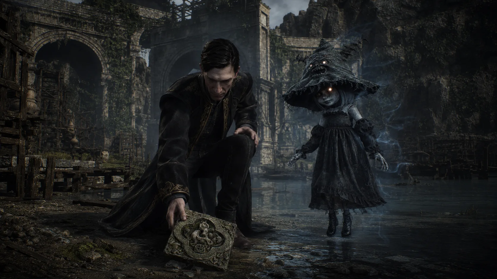

An illustrated journey
Eclipsed Realms
A dark fantasy role-playing game. You wake in a cage beneath an old house. The first voice you hear belongs to a doll.
Begin the journeyor scroll to exploreI / The awakening
A voice in the dark.
There’s a doll beside your cage. She speaks as though she’s been expecting you. For now, she knows something you need: a way out.
Follow her voice. Find the stairs. Step into daylight.
II / Harrowwick
The square falls silent.
In the village square, two people face the gallows for sheltering a woman who fled the church. A crowd has gathered. Will you speak against the hanging, or cheer with them?
Even here, among strangers, what you say matters.
III / Thornhallow
Someone needs shelter.
Farther on, the Veyne sisters lead a hidden village. A wounded deserter begs for shelter. His pursuers want him back. This time the question is who you’ll stand beside.
You build trust one person at a time.
IV / A moment on the road
When words run out.
Picture an enemy closing the distance. Raise a shield at the right moment and you can stagger them. Or set down a carved board called a Relief, step within its reach, and cast a spell.
Catch the swing on your shield. Now there’s an opening to strike.
V / Cairnhold
Beyond the city walls.
The road reaches the Kingdom’s capital. The Crown rules above; the Thieves have their own society below. A title might open a door, but it won’t tell you whom to trust.
There are other roads: to the Templars of Iron Vow Hold, or east into the Cult’s village of Vesper Hollow.
Epilogue / The open world
Who will walk beside you?
Go alone, or bring friends. Up to four people can share a campaign. You travel through the same world, but the answers you give and the relationships you build are your own.
Carry on from here
Choose your next page.
 For the curiousMeet the realmExplore its people and places. Story spoilers are yours to reveal.↗
For the curiousMeet the realmExplore its people and places. Story spoilers are yours to reveal.↗
For the adventurerTake your first stepsLearn to fight, cast magic and travel with others.↗Already playing? Search the player guide ↗ The journey is an illustrated retelling. World illustrations are concept art.